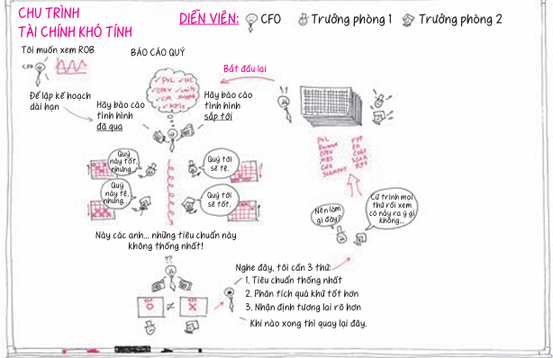

Hình Vẽ Thông Minh
Giải quyết mọi vấn đề phức tạp bằng những hình vẽ đơn giản. Khám phá phương pháp tư duy hình ảnh đã chinh phục Microsoft, Google, Boeing và Thượng viện Hoa Kỳ.
Cảm ơn bạn đã cho phép tôi tham dự vào đời sống công việc của bạn trong bốn ngày tới. Trước hết, tôi xin nói rõ rằng những ý tưởng mà chúng ta sắp khám phá sẽ không phải là quy chuẩn trong lĩnh vực kinh doanh. Chúng
không được dạy tại bất kỳ trường kinh doanh nào, chúng không xuất hiện trong tờ *Economist*, và ít vị tổng giám đốc nào chịu thừa nhận đã biết về chúng. Nhưng họ nên biết.
Bất kể bạn làm gì – dù là tổng giám đốc, quản lý dự án, kế toán viên, kỹ sư, cố vấn, nhà thiết kế, giáo viên, y tá, người đưa thư, phi công hay cầu thủ bóng đá – những ví dụ trong cuốn sách này đều có thể áp dụng trong lĩnh vực của bạn. Nếu bạn đang làm việc cho bất kỳ tổ chức nào hay trong bất cứ phạm vi nào mà bạn phải giải quyết các vấn đề – hay nói cách khác, nếu đang làm việc – những công cụ trong cuốn sách này sẽ giúp bạn giải quyết chúng.
Trong vòng hai năm kể từ khi cuốn *Chỉ cần mẩu khăn giấy *được phát hành, tôi đã có cơ hội chia sẻ những ý tưởng này với các nhà lãnh đạo thuộc nhiều lĩnh vực kinh doanh khác nhau.
Tôi đã trò chuyện với các nhà quản lý dự án tại Boeing, các nhà khoa học tại Pfizer, các lập trình viên tại Google, các kỹ sư tại Microsoft, các chuyên gia tiếp thị tại Wal-Mart, và các nhà hoạch định chính sách tại Thượng nghị viện Hoa Kỳ. Phải thú nhận rằng, trong nhiều trường hợp, tôi không biết nhiều về công việc của những người này trước khi đến gặp họ. Nhưng trong mọi trường hợp, họ đều nhìn thấy thứ gì đó có ý nghĩa trong cách tư duy giải quyết vấn đề bằng hình ảnh, và muốn tìm hiểu thêm.
Điều tôi muốn nói ở đây là: bất kể hoạt động chuyên ngành cụ thể của họ, tôi chỉ đưa ra một đề xuất rất đơn giản với từng người, và tôi muốn chia sẻ đề xuất đơn giản này với bạn. Đó là:
Chúng ta có thể giải quyết vấn đề bằng hình vẽ.
Chỉ có vậy. Đó là nội dung của bốn ngày tới – và hy vọng sẽ diễn ra trong nhiều ngày nữa trong suốt sự nghiệp của bạn: giải quyết vấn đề bằng hình vẽ. Giờ đây, tôi cũng thú nhận rằng nếu ai đó đứng trước mặt tôi và nói: “Này, chúng ta có thể giải quyết vấn đề của mình bằng hình vẽ,” tôi sẽ nghi ngờ, đặc biệt trong thời điểm hiện nay, khi những vấn đề mà chúng ta phải đối mặt dường như quá tải. Nhưng nếu ai đó nói với tôi như vậy, tôi cho rằng mình sẽ đủ tự tin để đáp lại: “Giải quyết vấn đề bằng hình vẽ nghe được đấy, nhưng hãy trả lời ba câu hỏi sau: Chúng ta đang nói về những vấn đề gì? Chúng ta đang nói về những hình vẽ nào? Và chúng ta đang nói về những người nào – cụ thể ‘chúng ta’ ở đây là những ai?”
Tôi đã được nghe cả ba câu hỏi này, và chúng đều là những câu hỏi hay, hay đến mức cả ba câu hỏi – những vấn đề gì, những hình vẽ nào, và những người nào – sẽ là nội dung chính của buổi hội thảo. Trong suốt bốn ngày tiếp theo, chúng ta sẽ bàn về các ý tưởng có liên quan với nhau: bốn quy tắc bất thành văn của phương pháp giải quyết vấn đề bằng hình ảnh, năm câu hỏi trọng tâm, sáu cách xem xét – nhưng chúng ta có thể tóm gọn toàn bộ cuộc hội thảo bằng cách chỉ trả lời ba câu hỏi cơ bản trên.
Trước khi bắt đầu trả lời ba câu hỏi này, giờ là lúc bạn nên lấy bút và dụng cụ vẽ ra, dù đó là bảng trắng, sổ tay, khăn giấy hay mặt sau của cuốn sách này. Chúng ta sẽ bắt đầu ngay với việc viết và vẽ. \(Bạn cũng có thể sử dụng những khoảng trống trong cuốn sách này\)
Chúng ta có thể giải quyết những vấn đề nào bằng hình vẽ? Câu trả lời đơn giản là tất cả các vấn đề. Ví dụ: các vấn đề chiến lược, các vấn đề về quản lý dự án, phân bổ nguồn nhân lực, các vấn đề chính trị,
tài chính – trên thực tế, bất cứ vấn đề nào mà chúng ta có thể diễn đạt đều có thể được trình bày một cách rõ ràng hơn rất nhiều, *nếu không nói là giải quyết ngay lập tức*, bằng hình vẽ.
TẬP VẼ: KỂ TÊN BA VẤN ĐỀ \(S, M, L\)
Trong khoảng trống bên dưới, hãy dành ba phút để viết ra ba vấn đề trong công việc mà bạn gặp phải gần đây. Đừng quá mất công, đây chỉ là bài tập khởi động và việc viết ra không có nghĩa là bạn phải giải quyết được chúng. \(Dù sao thì cũng chưa đến lúc.\)
Đầu tiên, hãy viết ra một vấn đề nhỏ – thứ không mấy quan trọng, nếu giải quyết được cũng tốt nhưng sẽ không thật sự ảnh hưởng đến công việc của bạn.
Vấn đề nhỏ của tôi: Tôi cứ hay làm mất bút.
Vấn đề nhỏ của bạn:
Tiếp theo, hãy viết ra vấn đề cỡ trung – thứ có ảnh hưởng đến nhiều người hoặc nhiều bộ phận của doanh nghiệp nhưng chưa đến mức đe dọa hủy diệt.
Vấn đề cỡ trung của tôi: Tôi thường quên nộp thuế quý đúng hạn. Vấn đề cỡ trung của bạn:
Cuối cùng, hãy viết ra vấn đề lớn – thứ đang đe dọa hoạt động kinh doanh của bạn và có vẻ như cần nhiều nỗ lực để giải quyết, nếu như có thể giải quyết được.
Vấn đề lớn của tôi: Những doanh nghiệp mà tôi đang hợp tác đều cắt giảm chi tiêu. Nếu cứ duy trì tình trạng này, doanh nghiệp của tôi có lẽ sẽ cạn vốn trong vòng hai năm tới.
Vấn đề lớn của bạn:
Căn cứ vào vô số vấn đề trong kinh doanh, bạn sẽ cho rằng những hình vẽ mà chúng ta sử dụng phải vô cùng phức tạp và đòi hỏi nhiều năm tập luyện mới vẽ được? Sai. Những hình vẽ mà chúng ta đang thảo luận lại rất đơn giản. Nếu có thể vẽ một hình tròn và một hình vuông cùng mũi tên kết nối chúng, bạn có thể vẽ được hầu hết các hình ảnh trong cuốn sách này. Thêm vào đó là hình mặt cười và một que hình người, thế là chúng ta thật sự có đủ các chi tiết cho mỗi hình vẽ mà chúng ta cần tạo ra để giải quyết vấn đề.
Bạn có thể vẽ được những hình này không?
TẬP VẼ: NHỮNG HÌNH VẼ CẦN CÓ
Trong khoảng trống bên dưới, hãy dành một phút để vẽ một vài hình dưới đây. Hoàn toàn không có sự khác biệt nào giữa hình vẽ đẹp và hình vẽ xấu. Chỉ cần bạn biết được mục đích của chúng, thế là đủ.
Hình cơ bản Đường \+ Mũi tên Người \+ Vật
Khi thực hiện những hình vẽ đơn giản này, bạn đã trả lời được câu hỏi thứ ba, phải không nào? Ai sẽ tạo ra những hình vẽ này? Câu trả lời thật đơn giản: *tất cả *chúng ta. Bất kể việc cho rằng chúng ta không giỏi về hình ảnh, rằng chúng ta không biết vẽ, tôi đảm bảo tất cả chúng ta đều có khả năng tạo ra những hình vẽ tuyệt vời để giải quyết vấn đề. Tôi tự tin nói điều này vì tất cả những gì chúng ta thực sự đang thảo luận là làm một việc mà ta vốn đã thành thạo: nhìn vào thế giới xung quanh, thấy các mô hình bên trong nó, hình dung cách sử dụng những mô hình này để tạo ra điều gì khác biệt, và sau đó trình bày các giải pháp với người khác.
TẬP VẼ: HÃY VẼ “TÔI”
Hãy vẽ một que hình người. Bổ sung thêm một số chi tiết để bạn biết rằng nó là bạn: tóc, kính, mũ, quần áo. Chúng ta sẽ lại sử dụng que hình người này, vì vậy, hãy đảm bảo nó đủ đơn giản để bạn có thể vẽ đi vẽ lại nếu cần.
nội dung thảo luận
Nội dung chính của cuộc hội thảo dựa trên bốn bước đơn giản trong quy trình tư duy bằng hình ảnh. Hôm nay, chúng ta sẽ bắt đầu bằng việc học cách nhìn tốt hơn – ở đây chúng ta không nói về nhãn khoa. Cụm từ “nhìn tốt hơn” có nghĩa là việc biết cách thu thập thông tin thô bằng hình ảnh về thế giới quanh ta và việc nhận biết về quy trình đó sẽ giúp chúng ta trở thành những người giải quyết vấn đề bằng hình ảnh tốt hơn.
Ngày mai, chúng ta sẽ chuyển sang *thấy *– quy trình nhận diện các mô hình trong những vấn đề xảy ra trước mắt để có cách giải quyết tốt hơn. Vào Ngày thứ 3, chúng ta sẽ chuyển sang đôi mắt tâm trí để hình dung ra các cách sử dụng những mô hình này nhằm tạo ra những kết quả mới, và vào Ngày thứ 4, chúng ta sẽ tập trung vào việc trình bày những ý tưởng vừa mới khám phá với người khác.
Nội dung cuộc hội thảo bốn ngày: mỗi ngày sẽ học hoàn thiện cách nhìn, thấy, hình dung, và trình bày.
HÌNH DUNG
TRÌNH
BÀY
Mỗi ngày, một chủ đề cơ bản sẽ tập trung vào những thứ chúng ta nhìn vào. Tôi gọi những chủ đề này là “bốn quy tắc bất thành văn của lối tư duy giải quyết vấn đề bằng hình ảnh”. Tôi sử dụng từ “bất thành văn” vì hai lý do: Thứ nhất, vì tôi chưa thấy chúng được viết ra ở bất cứ nơi nào. Thứ hai, chúng quan trọng đến mức tôi không muốn chúng ta chỉ đơn giản ghi lại; tôi muốn chúng ta tin rằng mình đã đích thân lựa chọn từng quy tắc, nắm giữ nó trong tay, nhìn nhận nó, nghĩ về nó và nghĩ về ý nghĩa của nó. Và tôi muốn như thể chúng ta đã dùng tay gắn kết chúng lại với nhau. Tôi muốn chúng ta thực sự *vẽ *ra từng quy tắc theo nghĩa đen của từ này.
Hãy nhìn lại những vấn đề chúng ta viết ra cách đây vài phút.
QUY TẮC 1
Người nào có thể mô tả vấn đề một cách rõ ràng nhất là người có nhiều khả năng giải quyết nhất.
Bạn tự tin đến mức nào trong khả năng giải quyết những vấn đề này? Cá nhân tôi khá tự tin rằng mình có thể tìm ra cách giải quyết vấn đề nhỏ \(mất bút\), không quả quyết lắm về vấn đề vừa \(chậm nộp thuế\), và hoàn toàn không chắc chắn về vấn đề lớn \(mọi người đều cắt giảm chi phí\). Đó là khả năng giải quyết vấn đề với tỷ lệ thành công 50/50: không tốt lắm.
Hãy nhìn nhận nó theo cách khác. Khi trình bày vấn đề \(tôi hay làm mất bút; tôi chậm nộp thuế; tôi sắp cạn tiền\), tôi đã ám chỉ đến một giải pháp \(không làm mất bút nữa, nộp thuế đúng hạn, kiếm thêm tiền\). Vậy là tốt rồi, bởi để “giải quyết” điều gì đó, tôi phải biết được “mặt ngắn mặt dài” của giải pháp.
Nhưng nếu thực sự định giải quyết một vấn đề, tôi phải biết thêm về nó: *Đâu là phần lưu động? Đối tượng tham gia là ai? Chúng ta đang nói về bao nhiêu thời gian hoặc tiền bạc? Khi nào cần khắc phục để nó thực sự phát huy tác dụng? Bắt đầu với hướng đi này như thế nào? *Việc trả lời những kiểu câu hỏi này – “khoanh vùng” vấn đề để nó trở nên dễ giải quyết – đòi hỏi phải nỗ lực thực sự. Và trong kinh doanh, bất cứ điều gì cần đến nỗ lực đều cần có tiền.
Tốt thôi: chúng ta đều biết rằng việc giải quyết một vấn đề kinh doanh thường tốn kém. Nhưng liệu chúng ta có bao giờ nghĩ về mức chi phí cần có chỉ để xác định được vấn đề? Đó là phần khó, khó hơn so với việc giải quyết nó. Việc có thể phác họa những mảnh ghép của vấn đề có nghĩa là chúng ta hiểu vấn đề đó đủ rõ để giải quyết được nó. Thậm chí xa hơn nữa: nếu phác họa được đối tượng tham gia, các chi tiết, thời gian,
và yếu tố cấu thành vấn đề đó, chúng ta gần như đã tìm ra được giải pháp; chúng ta chỉ cần học cách quan sát nó.
Câu hỏi đặt ra: Trong bối cảnh kinh doanh, ai sẽ kiếm được tiền: người nói “Tôi nhìn thấy một vấn đề” hay người nói, “Tôi nhìn thấy một vấn đề, nó trông như thế *này*, và giải pháp có thể trông như thế *kia*”? Nếu phải phân bổ nguồn lực hạn chế của mình để giải quyết việc làm mất bút, chậm nộp thuế và các vấn đề về tài chính, có lẽ tôi sẽ không giao việc cho chính mình: Tôi còn chưa có đủ thông tin để thuyết phục bản thân rằng mình biết tất cả những vấn đề này là gì.
Trở lại với Quy tắc 1, nhưng lần này có thêm thông tin có lợi:
Người nào có thể mô tả vấn đề một cách rõ ràng nhất là người có nhiều khả năng giải quyết nhất.
Hoặc
Người nào vẽ được hình ảnh rõ ràng nhất sẽ kiếm được tiền
Quy tắc 1 chỉ đơn giản như vậy. Nếu bạn thực sự muốn giải quyết một vấn đề – hay nói thẳng là *nếu bạn muốn có tiền *– cách tốt nhất là đưa ra hình ảnh rõ ràng nhất về “diện mạo” của vấn đề đó.
Hãy xem ví dụ sau đây.
Vài tháng trước cuộc bầu cử tổng thống năm 2008, Doug Steiger – giám đốc chính sách mới của Ủy ban chính sách Dân chủ Thượng viện Hoa Kỳ – đã mời tôi đến Washington D.C. để thực hiện một buổi nói chuyện. Các chánh văn phòng Thượng viện của đảng Dân chủ đang tìm cách truyền đạt các khái niệm
Hãy vẽ một đường kết nối San Francisco
đến Washington, D.C.\*
\* Nếu bạn đang tự hỏi vì sao tôi sử dụng khăn giấy của hãng bay Southwest Airlines, đó là vì Southwest – hãng hàng không thành công nhất trong lịch sử – được khởi đầu từ mặt sau của một chiếc khăn giấy.
Tham khảo cuốn *Chỉ cần mẩu khăn giấy *để biết toàn bộ câu chuyện về hãng bay này.
phức tạp một cách rõ ràng, và cho rằng các ý tưởng của tôi có thể hữu ích. Tôi nhận lời và lên máy bay đến Washington.
Trước mỗi buổi nói chuyện, tôi luôn tìm kiếm những hình ảnh giải quyết vấn đề được vẽ trực tiếp từ lĩnh vực mà tôi sắp phát biểu. Trong trường hợp này, tôi đã gặp khó khăn khi tìm kiếm ví dụ mẫu về vai trò quan trọng của những phác thảo khăn giấy trong hoạt động chính trị hay ban hành chính sách. Tôi biết rằng George Washington được đào tạo làm thanh tra viên và thích tạo ra bản đồ, rằng JFK không ngừng vẽ nguệch ngoạc trên giấy khi đưa ra những quyết định tối quan trọng trong suốt thời kỳ chiến tranh lạnh, còn Ronald Reagan thường viết nguệch ngoạc trong các cuộc họp nội các. Nhưng tôi chưa từng thấy câu chuyện “chỉ cần mẩu khăn giấy” nào về điều này.
Sau buổi hội thảo với các chánh văn phòng, Doug kể cho tôi nghe câu chuyện mà tôi tìm kiếm. Hóa ra vào khoảng năm 1974, nhà kinh tế học tên Arthur Laffer đã có một cuộc họp với hai chính khách thuộc đảng Cộng hòa. Khi cuộc nói chuyện của họ chuyển sang đề tài chính trị, Arthur lấy bút ra và bắt đầu vẽ – đúng vậy, bạn đã đoán đúng – trên một miếng khăn giấy. Ông ấy bắt đầu bằng một đường kẻ ngang \(trục hoành\), vừa vẽ vừa nói: “Trục này đại diện cho tỷ lệ phần trăm thu nhập mà người dân phải đóng thuế cho chính phủ, từ 0 đến 100%”.
Thuế
Sau đó, ông ấy vẽ một đường kẻ dọc \(trục tung\) và nói: “Trục này là tổng số tiền mà chính phủ thu được, từ 0 đến rất nhiều.”
Thuế
Tiếp đến, ông vẽ một chấm nhỏ ở điểm giao nhau giữa hai trục: “Nếu chính phủ lấy 0%, số tiền là 0”. Vẽ tiếp một chấm khác trên trục hoành – lần này ở điểm rất xa bên ngoài – ông ấy nói: “Còn nếu lấy hết 100% thì chính phủ cũng sẽ không được xu nào bởi chẳng ai làm việc nếu phải nộp hết cho thuế.”
Thuế
Laffer vẽ một đường kết nối các chấm với nhau, bắt đầu từ điểm 0 đầu tiên, uốn cong qua mặt giấy – gần chạm đỉnh biểu đồ – sau đó chuyển hướng xuống dưới ở điểm 0 thứ hai.
“Tôi cho rằng thu nhập thuế đi theo đường cong như thế này; 0 ở mức 0%, 0 ở mức 100%, nhưng lại tăng ở đây,” Laffer vừa nói vừa chỉ vào đỉnh của đường cong hướng lên trên đỉnh biểu đồ, “tại một số thời điểm, *việc giảm *thuế suất sẽ thật sự *làm tăng *lượng tiền mà chính phủ thu được.”
Thuế
Thuế
Những gì Arthur vẽ đã được gọi là “đường cong Laffer”, và nó hẳn sẽ chẳng có ý nghĩa gì ngoài một mô hình học thuật nếu không có hai người đàn ông ngồi cùng. Khi đó, họ là Dick Cheney và Don Rumsfeld – chánh văn phòng của Tổng thống Gerald Ford. Họ quá thích thú với sức mạnh của hình vẽ trên khăn giấy của Arthur đến mức đã mang nó về Nhà trắng và chia sẻ với Tổng thống Ford. Chỉ trong vòng vài năm, đường cong Laffer đã trở thành nền tảng cho sách lược kinh tế trọng cung của Tổng thống Ronald Reagan, trong đó nhấn mạnh rằng việc giảm thuế – đặc biệt đối với những người có thu nhập cao nhất – sẽ thật sự làm tăng nguồn thu của chính phủ.
Bản phác thảo đơn giản trên khăn giấy đó – hình vẽ nhỏ bé nhưng minh họa một cách rõ nét *vấn đề *của chính sách thuế cao và *giải pháp *của sách lược kinh tế trọng cung – đã trở thành “kim chỉ nam” cho chính sách kinh tế Hoa Kỳ suốt 30 năm qua.
Vậy thì ai nói một hình vẽ trên khăn giấy không có ý nghĩa?
*Người nào phác họa được hình ảnh tốt nhất là người kiếm được tiền.*
Nào, chúng ta hãy vẽ một hình.
Trong bài tập tiếp theo, chúng ta sẽ từng bước tạo ra hình vẽ “trên mặt sau mẩu khăn giấy” của chính mình. Những bài học rút ra ở đây sẽ được áp dụng cho mỗi hình vẽ được tạo ra.
Trên mặt khăn giấy bên dưới, hãy vẽ theo để tạo ra bộ công cụ giải quyết vấn đề bằng hình ảnh của riêng bạn. Đây là hình vẽ quan trọng nhất mà chúng ta sẽ thực hiện trong suốt buổi hội thảo, vì vậy, hãy nhớ đánh dấu trang này. Vì chứa đựng mọi công cụ tư duy hình ảnh trong cuốn sách nên hình vẽ này sẽ được tham khảo thường xuyên.
Mắt
Trí tưởng
tượng Tay\+Mắt
Hãy vẽ theo và đánh dấu trang này: chúng ta sẽ quay trở lại
vì sao như thế nào
khi nào ở đâu
bao nhiêu
ai/ cái gì
Trước hết – và đây là cách chúng ta sẽ bắt đầu mọi hình vẽ để giải quyết vấn đề – hãy vẽ một hình tròn và đặt tên cho nó. Trong trường hợp này, hãy vẽ hình tròn ở góc phía trên bên trái và gọi nó là “tôi”. \(Để ấn tượng hơn, hãy bổ sung vài chi tiết trông giống bạn – đây là cơ hội để bạn sử dụng đến que hình người\).
vì sao như thế nào
khi nào ở đâu
bao nhiêu
ai/ cái gì
Mắt
Trí tưởng
tượng Tay\+Mắt
Chúng ta bắt đầu mỗi hình vẽ bằng cách vẽ một hình tròn và đặt tên cho nó. Trong trường hợp này, hãy gọi nó là “tôi”.
Điểm khó nhất trong mọi hình vẽ là nét vẽ đầu tiên. Việc nhìn vào bề mặt trống trơn cũng đủ khiến ta sợ hãi – ngay cả khi bề mặt đó chỉ là một miếng khăn giấy. Khi vẽ một hình tròn và đặt tên cho nó \(“tôi”, “bạn”, “chúng tôi”, “cạnh tranh”, “ngày nay”, “ngày mai”, “lãi”, “lỗ”, “sản phẩm của chúng tôi” –
bất cứ điều gì mà bạn có thể nghĩ ra\), chúng ta sẽ không có cơ hội chần chừ. Khi đã vẽ xong hình tròn đầu tiên, chúng ta đã tạo cho mình con đường tắt băng qua dãy phố dài mang tên “thật khó để vẽ được một bức hình”.
Giờ thì vẽ một hình tròn khác ở góc dưới bên trái. Vẽ to hơn hình tròn trên một chút và tạo hình giống như đám mây. Hãy gọi nó là “vấn đề của tôi”.
như thế nào khi nào
ở đâu bao nhiêu
ai/ cái gì
vì sao
Mắt
Trí tưởng
tượng Tay\+Mắt
Hãy vẽ một hình tròn khác – theo kiểu hơi gợn sóng – và gọi nó là “vấn đề của tôi”.
Tin hay không tùy bạn, nhưng chỉ với hai hình tròn, đầu óc tôi đã bắt đầu nhảy múa. *Tiếp theo là gì đây? Đâu là mối liên hệ? *Bộ óc của chúng ta xuất hiện vô số câu hỏi – nó buộc phải
như thế; đó chính là cách bộ não được kết nối để phản ứng với lượng hình ảnh đi vào. Sau mười giây hoạt động, chúng ta thực sự bị cuốn vào hình ảnh của riêng mình, và tâm trí bắt đầu háo hức hình dung điều kế tiếp.
Để khiến mọi thứ luôn thú vị, giờ hãy tạo một đường cong cho bộ óc của chúng ta. Thay vì kết nối hai hình tròn với nhau – cách mà chúng ta thật sự muốn làm – chúng ta sẽ bổ sung hình tròn thứ ba. Chỉ khác là lần này hình tròn được kéo dài ra, kiểu như hình xúc xích, và được đặt ngay phía trước, giữa mặt khăn giấy. Nhưng nhớ đừng đặt tên cho hình này.
Trí tưởng
Mắt
tượng Tay\+Mắt
vì sao
như thế nào
khi nào ở đâu bao nhiêu
ai/ cái gì
Bổ sung hình tròn thứ ba – kiểu giống như hình xúc xích – vào vị trí giữa. Hình này không có tên.
Trước khi tiếp tục, đây là câu chuyện về những gì chúng ta đang vẽ. Khi tôi bắt đầu với vai trò cố vấn, phải mất một thời gian dài tôi mới hiểu ra công việc thực sự của một chuyên gia tư vấn. Sau nhiều năm, cuối cùng, tôi nhận ra rằng vai trò của chuyên gia tư vấn là giải quyết vấn đề theo yêu cầu: bạn được mời tham dự một cuộc họp kinh doanh, được người ta trình bày một số dữ liệu và câu hỏi, và người ta kỳ vọng bạn sẽ bắt đầu giải quyết vấn đề ngay tại đó, bất kể là vấn đề gì. Hy vọng rằng bạn có khái niệm chung về *loại *vấn đề đó, nhưng các chi tiết cụ thể thì hầu như lúc nào cũng mới mẻ.
Tôi nhận ra rằng thứ tôi thật sự cần có là một bộ công cụ vạn năng giải quyết vấn đề, thứ mà tôi có thể mang theo bất cứ nơi đâu để bước vào một cuộc họp, lắng nghe người khác nói, và sau đó tự tin lựa chọn đúng loại công cụ để bắt đầu quy trình giải quyết vấn đề. Hình xúc xích vừa được vẽ ở trên là bộ công cụ của chúng ta. Nhưng thay vì viết ra tất cả, có một cách tốt hơn để gọi tên bộ công cụ đó: hãy vẽ một chữ thập nhỏ lên trên. Bạn làm đúng rồi đấy: bộ công cụ mà chúng ta đang vẽ chính là một con dao đa năng Thụy Sĩ.
như thế nào khi nào
ở đâu bao nhiêu
ai/ cái gì
vì sao
Mắt
Trí tưởng
tượng Tay\+Mắt
Aha! Bộ công cụ giải quyết vấn đề của chúng ta là dao đa năng Thụy Sĩ
Nếu bạn chưa biết về loại dao này, tôi xin nói qua: đó là loại dao bỏ túi chứa bên trong nhiều lưỡi dao, mỗi lưỡi được thiết kế hơi khác nhau để phục vụ cho từng mục đích cụ thể – ví dụ như cắt dây, cưa gỗ, đánh vẩy cá, hoặc mở nút chai rượu. Trong suốt nhiều thập kỷ, dao đa năng Thụy Sĩ đã trở thành biểu tượng của loại công cụ có thể mang theo bất cứ nơi đâu. Lore nói rằng nếu sở hữu một con dao đa năng Thụy Sĩ, bạn có thể dựng một túp lều gỗ, chống lại gấu xám Bắc Mỹ, và sau đó nằm thư giãn cắt móng tay. Khỉ thật, với một con dao đa năng
Thụy Sĩ, bạn có thể sửa chữa được cả máy bay trong khi đang bay – nếu hải quan cho phép bạn mang nó lên máy bay.
Vấn đề là tôi cũng muốn có con dao đó – chỉ khác là con dao của tôi phải được trang bị những “lưỡi dao” cần thiết để tiếp cận một vấn đề dưới góc độ hình ảnh. Rõ ràng, việc mang một con dao kim loại vào phòng họp chẳng tốt chút nào; đó phải là một bộ công cụ thuộc trí óc, nghĩa là phải toàn diện, đơn giản và dễ nhớ. Do đó, những lưỡi dao trong bộ công cụ của chúng ta được đặt tên theo dãy số gồm ba, bốn, năm, sáu, trong đó mỗi dãy số tượng trưng cho một khía cạnh giải quyết vấn đề bằng hình ảnh cụ thể. Hãy bắt đầu với dãy số ba.
Ở phía trên bên phải của dao \(hình thuôn\), hãy vẽ ba lưỡi dao đầu tiên. Những lưỡi dao này đại diện cho những công cụ tư duy hình ảnh mà chúng ta có được từ lúc mới sinh ra và cho phép ta sử dụng để giải quyết mọi vấn đề phức tạp bằng lối tư duy hình ảnh. Đó là mắt, trí tưởng tượng \(hay đôi mắt tâm trí\), và sự phối hợp giữa mắt và tay.
Mắt
Trí tưởng
tượng Tay\+Mắt
như thế nào khi nào
ở đâu bao nhiêu
ai/ cái gì
vì sao
Bổ sung ba lưỡi dao đầu tiên: các công cụ tư duy hình ảnh vốn có của chúng ta
Chúng ta sẽ không dành nhiều thời gian nói về những công cụ này, mà chỉ cần nói rằng tất cả chúng ta đều có thể giải quyết vấn đề tốt hơn khi sử dụng chúng. Hãy nghĩ về điều này: gần 75% nơ-ron trong não được dùng để xử lý các thông tin thuộc giác quan – ngửi, nếm, chạm, nghe, thấy – đều tập trung cho thị giác. Thoạt nghe 75% có vẻ hơi nhiều, nhưng hóa ra bộ não con người rất dở trong việc hiểu các tỷ lệ phần trăm khi chúng được thể hiện bằng từ ngữ. Vì vậy, thay vào đó, hãy nghĩ về con số đó, hãy *nhìn *vào nó.
TẬP VẼ: 75% THẬT SỰ LÀ BAO NHIÊU?
Hãy tưởng tượng rằng bốn người này đại diện cho khả năng xử lý thông tin đi vào thông qua các giác quan. Hãy thể hiện xem bao nhiêu người trong số đó hoàn toàn “bị chiếm dụng” chỉ để xử lý những gì chúng ta *thấy*.
Còn lại bao nhiêu người dành cho việc khác?
Đây là một cách vẽ khác để bạn thật sự có thể thấy nó. Hãy điền vào các ô vuông bên dưới bằng một trong năm biểu tượng bên cạnh. Điền theo đúng tỷ lệ nơ-ron hình ảnh với các nơ-ron thuộc giác quan khác.
Khả năng xử lý giác quan của não bộ:
Nhìn
Nghe
Nếm
Chạm
Ngửi
BỘ NÃO CỦA CHÚNG TA
Khi kết thúc, bạn nên có một biểu đồ như sau:
Nhìn
Nghe Nếm
Chạm Ngửi
Giờ hãy nhìn vào biểu đồ và tự hỏi: nếu đó là cách thức tâm trí chúng ta được định hình để xử lý các thông tin đi vào, vậy chúng ta thường sử dụng bao nhiêu phần trăm “thị giác” đó trong các cuộc họp?
Lần tới, khi bạn hoặc người quen của bạn nói “Tôi không vẽ được,” hãy nghĩ về biểu đồ mà bạn vừa vẽ. Chúng ta – tất cả chúng ta – đều biết vẽ, rất giỏi nữa là đằng khác. Ba lưỡi dao đầu tiên này nhắc nhở về những gì tạo hóa ban tặng: chúng ta có mắt để xử lý thông tin hình ảnh, chúng ta có trí tưởng tượng \(đôi mắt của tâm trí\) để cân nhắc và xem liệu ta có thể tạo ra điều gì thú vị với hình ảnh đó, và chúng ta có đủ sự phối hợp giữa tay và mắt để chuyển tải những điều mình vừa chợt nghĩ ra \(dù theo cách thô sơ\). Ba lưỡi dao này nhắc nhở chúng ta sử dụng những gì mình đã có: bộ máy tư duy hình ảnh kỳ diệu mà thượng đế ban tặng.
Tôi đặt chuẩn tư duy hình ảnh ở mức rất thấp: nếu có thể nhìn đủ rõ để bước vào một căn phòng mà không bị ngã và tìm một chỗ ngồi, bạn cũng có thể nhìn đủ rõ để hiểu mọi thứ mà chúng ta sắp nói đến.
Điều đó không có nghĩa là tất cả chúng ta đều xử lý thông tin hình ảnh theo cách hoàn toàn giống nhau, dựa vào thị giác giống nhau, hay thậm chí tư duy giống nhau; mà xa hơn thế. Tất cả chúng ta đều có những khả năng của riêng mình, và chúng ta nhìn thế giới theo nhiều cách khác nhau. Điều chúng ta tìm kiếm ở đây là những cách thức chứa đựng quan điểm trùng lắp trong cách tiếp cận riêng của mỗi người.
Đen, vàng hay đỏ: cây bút của bạn màu gì? Trong hàng trăm cuộc họp bàn công việc, tôi đã tiến hành một cuộc khảo sát về cách tiếp cận giải quyết vấn đề bằng hình ảnh
của mọi người. Tôi đã nhận ra rằng những phương pháp này
dao động trong một phạm vi đặc biệt, từ những người có thể vẽ mọi thứ đến những người ghét cầm bút.
“Đưa cho tôi cây bút!” “Tôi không biết vẽ, “Tôi không giỏi
nhưng...”
về hình ảnh”
“Bút đen” “Bút vàng” “Bút đỏ”
\(Bút đánh dấu\)
Xét về khả năng giải quyết vấn đề bằng hình ảnh, tất cả chúng ta đều nằm đâu đó trong phạm vi này.
1. Tôi gọi nhóm đầu tiên là Bút Đen. Đây là nhóm người chỉ mong bước đến chiếc bảng trắng và bắt đầu vẽ chỉ hai phút sau khi cuộc họp bắt đầu. Họ thích sử dụng những phép suy diễn và hình ảnh ẩn dụ để trình bày ý tưởng, và rất tự tin khi vẽ những hình ảnh đơn giản, vừa để tóm tắt các ý tưởng vừa giúp tìm kiếm giải pháp thông qua những ý tưởng này.
2. Tôi gọi nhóm thứ hai là Bút Vàng. Nhóm này thích nhìn nhóm Bút Đen vẽ trên bảng nhưng cần được khuyến khích để có thể đứng lên và tự mình vẽ – và họ cần bước lên bảng bởi họ thấy được sự kết nối trong hình vẽ mà nhóm Bút Đen thường bỏ qua. Đó là lý do họ được gọi là nhóm Bút Vàng: những người nhấn mạnh, bổ sung và sàng lọc ra những phần hấp dẫn nhất trong bản phác thảo ban đầu của người khác. Nhóm Bút Vàng thường nói “Tôi không biết vẽ, nhưng...”, và một khi đã bắt đầu, họ sẽ khám phá ra những ý tưởng và những điểm kết nối đầy bất ngờ.
3. Nhóm cuối cùng là Bút Đỏ. Đây là nhóm người trầm lặng ngồi phía sau: những người ngày càng trở nên phấn khích khi nhóm Bút
“Đưa cho tôi cây bút!”
“Tôi không biết vẽ, nhưng...”
“Tôi không giỏi
về hình ảnh”
Đen và Bút Vàng “tấn công” chiếc bảng trắng. Tuy nhiên, hãy thận trọng: Nhóm Bút Đỏ im lặng không phải vì họ không hiểu; họ im lặng vì cho rằng những thứ mình đang nhìn thấy đều rất vớ vẩn. Họ thất vọng bởi vì những hình ảnh đang xuất hiện quá nông cạn đến mức chúng khiến cho vấn đề trở nên tồi tệ hơn. Bút Đỏ là nhóm người rất am hiểu các chi tiết và sự kiện, vậy nên thật khó để họ nhìn nhận những bức vẽ đơn giản này một cách nghiêm túc – và họ thường nói đúng: phần lớn những thứ được vẽ trên bảng đều vớ vẩn. Nhưng nó hiển hiện rõ ràng, và đó chính là điểm tạo nên sự khác biệt.
Để tạo ra một hình ảnh thật sự giải quyết vấn đề, chúng ta cần có sự tham gia của cả ba màu: Bút Đen khởi động quy trình bằng cách đặt ra điều gì đó – dù nông cạn – để mọi người thấy. Tiếp đến, Bút Vàng sẽ bổ sung các mối liên hệ và kiến thức sâu sắc, có thể sẽ đưa toàn bộ hình vẽ theo một chiều hướng mới. Sau đó – oops – chúng ta tạm dừng suy nghĩ: làm cách nào để có được các chi tiết và lời nhận xét của Bút Đỏ khi Bút Đỏ không thích những hình vẽ đơn giản? Có một cách: Bút Đen và Bút Vàng phải tìm cách khiến cho Bút Đỏ khó chịu đến mức anh ta hoặc cô ta phải đứng bật dậy khỏi ghế, bước lên bảng xóa hết nửa hình vẽ, và tạo ra một phác thảo hoàn toàn mới: thứ có khả năng xác định rõ nhất *cái gì là cái gì*.
Khi nghĩ về điều đó, liệu bạn có thể cho biết bút của bạn có màu gì không? Chúng ta hãy cùng tìm hiểu.
BÚT CỦA BẠN MÀU GÌ?
Hãy chọn câu trả lời đúng nhất cho từng câu hỏi dưới đây:
A. Tôi đang họp tìm giải pháp trong một hội trường nơi có tấm bảng lớn, tôi muốn:
1. Bước lên bảng và bắt đầu vẽ các hình tròn, hình vuông.
2. Bước lên bảng và bắt đầu viết ra các danh sách theo từng hạng mục cụ thể.
3. Bổ sung vài thứ để làm rõ những điều đã có sẵn.
4. Hãy quên chiếc bảng đó đi – chúng ta có nhiều việc cần làm.
5. Tôi ghét các cuộc họp kiểu này.
B. Ai đó đưa cho tôi cây bút và yêu cầu tôi phác họa một ý tưởng cụ thể, tôi:
1. Yêu cầu thêm bút – ít nhất là ba màu.
2. Bắt đầu vẽ và xem điều gì sẽ xuất hiện.
3. Nói “Tôi không biết vẽ, nhưng...” và tạo ra một hình vẽ xấu.
4. Viết một vài từ, sau đó đóng khung chúng lại.
5. Đặt bút lên bàn và bắt đầu nói.
C. Ai đó đưa cho tôi một bản in nhiều trang đầy phức tạp, trước tiên, tôi:
1. Liếc qua và hy vọng nó sẽ biến mất.
2. Lướt qua xem có điều gì thú vị.
3. Đọc qua các cột để xác định các đề mục.
4. Tìm kiếm các kết quả dữ liệu chung ở các ô.
5. Nhận thấy rằng chi phí điều hành \(OPEX\) giảm trong quý hai.
D. Trên đường trở về nhà sau hội nghị, tôi tình cờ gặp một đồng nghiệp tại quán bar ở sân bay, và anh ấy hỏi tôi làm gì, tôi:
1. Lấy một miếng khăn giấy và yêu cầu người phục vụ cho mượn một cây bút.
2. Lập một biểu đồ tổ chức bằng các gói đường.
3. Mở trang PowerPoint từ thiết bị cầm tay.
4. Nói “nên gọi thêm một chầu nữa – sẽ mất một lúc đấy”.
5. Chuyển hướng cuộc nói chuyện sang chủ đề thú vị hơn.
E. Nếu là phi hành gia đang bay lơ lửng trong không gian, điều đầu tiên tôi làm là:
1. Hít thở sâu và chiêm ngưỡng toàn cảnh.
2. Lấy máy ảnh ra.
3. Bắt đầu mô tả những điều nhìn thấy.
4. Nhắm mắt lại.
5. Tìm cách quay trở lại tàu vũ trụ.
Giờ hãy cộng điểm để tự đánh giá bản thân \(con số trước mỗi câu\): Điểm
5-9 Đưa cho tôi cây bút! \(Bút Đen\)
10-14 Tôi không biết vẽ, nhưng... \(Bút Vàng\) 15\+ Tôi không giỏi về hình ảnh \(Bút Đỏ\)
Bạn đã đạt đến điểm nào? Đó là vị trí mong đợi hay hoàn toàn bất ngờ? Nếu hoàn toàn bất ngờ, vậy theo bạn vì sao điều đó có thể xảy ra? Tôi đã thực hiện bài tập đánh giá này cả hàng trăm lần, và kết quả hầu như luôn tuân theo một đường cong hình chuông. Khoảng một phần tư số người tham dự bất kỳ
cuộc họp nào cũng thuộc nhóm Bút Đen, một nửa thuộc nhóm Bút Vàng, và phần tư còn lại thuộc nhóm Bút Đỏ. Đại loại như sau:
“Đưa cho tôi cây bút!” “Tôi không biết vẽ,
nhưng...”
“Bút đen”
“Bút vàng”
“Bút đỏ”
“Tôi không giỏi về hình ảnh”
\(Bút đánh dấu\)
Trong hầu hết các cuộc họp, kết quả đều tuân theo đường cong hình chuông. Vậy bạn ở vị trí nào?
Tôi thích bài tập tự đánh giá này vì nhiều lý do: Thứ nhất, nó giúp chúng ta suy nghĩ về phương pháp tiếp cận giải quyết vấn đề vốn có của bản thân theo cách mà chúng ta thường không làm. Thứ hai, nó cho chúng ta thấy rằng không chỉ có một cách duy nhất – thậm chí thuộc hình ảnh – để tiếp cận một vấn đề nào đó. Thứ ba, nó nhắc nhở chúng ta về sự đa dạng trong cách thức suy nghĩ về những thứ ta thấy cũng như cách truyền đạt chúng. Nếu cách thức tiếp cận đa dạng đến thế, vậy sao các bản báo cáo kinh doanh lại trông như thế này?
Nếu cách thức tiếp cận vấn đề đa dạng đến thế, vậy sao các bản báo cáo kinh doanh lại trông như thế này?
Suốt ba năm, tôi đã thực hiện nhiều dự án tại Microsoft. Dù gần như một nhân viên của Apple kể từ năm 1984, tôi lại phát hiện ra Redmond, Washington, không hề giống một đế chế tàn độc như tôi vẫn tưởng: Tôi ngạc nhiên khi nhận ra mình yêu thích con người và các quy trình làm việc ở đó biết nhường nào. Dù vậy – và với rủi ro làm vỡ hũ gạo thỉnh thoảng vẫn nuôi sống mình – tôi vẫn chỉ trích chương trình PowerPoint. À khoan: tôi sẽ không chỉ trích phần mềm đó, chỉ phê phán những người sử dụng nó thôi.
Về cơ bản, không có điều gì sai với chương trình PowerPoint; cũng giống như các phần mềm khác, nó chỉ là một công cụ\(\*\). Giống như việc chúng ta đổ lỗi cho thợ rèn khi ngôi nhà bị sập, chúng ta không nên đổ lỗi cho PowerPoint khi không thể truyền đạt được thông tin. Vấn đề là đây: PowerPoint quá dễ sử dụng đến mức khiến chúng ta trở nên lười biếng. Vì có thể nhanh chóng tạo ra những thứ từng là kết quả của nhiều công đoạn khác nhau \(viết, đánh máy, phác họa, đề cương, thẻ biên mục, Post-its, bảng lật, v.v...\), chúng ta trở nên quen thuộc với việc cho rằng mình có thể nhanh chóng tạo ra những nội dung thuyết trình có ý nghĩa chỉ trong vài giờ.
Hãy đoán xem? Chúng ta không làm được đâu.
Đúng là chúng ta có thể, nhưng kết quả là chúng ta không còn suy nghĩ trong quá trình thực hiện: chúng ta dừng suy nghĩ về những điều mình thật sự muốn nói bởi việc trình bày nhiều vấn đề trở nên quá dễ dàng; chúng ta không còn suy nghĩ về những gì thật sự quan trọng bởi quá dễ dàng thực hiện trong “vài ba trang nữa”; và nguy hiểm nhất là chúng ta không còn suy nghĩ về mặt trái của vấn đề sẽ như thế nào.
Mỗi khi tôi tham dự một cuộc họp hay hội thảo kinh doanh, khi ai đó bật chương trình PowerPoint và bắt đầu đọc từ màn
\* Không giống như những người thuộc phong trào chống PowerPoint, tôi hầu như luôn sử dụng chương trình này và nhận thấy nó rất hữu ích trong việc thực hiện những bài thuyết trình đơn giản. Trên thực tế, trong Ngày 4, tôi sẽ thảo luận với bạn về chương trình vẽ “trực tiếp” tuyệt vời nhất từ trước đến nay. Hãy đoán xem đó là gì? PowerPoint.
hình, mọi người thường co rúm người lại. Thế nhưng, đáng sợ hơn cả là khi người kế tiếp đứng lên từ đám đông vừa bị tra tấn đó cũng *làm giống hệt như người trước*. Chẳng trách vì sao việc chuyển tải và giải quyết vấn đề kinh doanh luôn gặp trở ngại: từ kinh nghiệm của bản thân, chúng ta đều biết rõ rằng phương pháp tiếp cận này sẽ không phát huy tác dụng, nhưng chúng ta lại đứng lên và làm điều tương tự khi đến lượt mình. Điều đó hoàn toàn giống với định nghĩa của Einstein về sự điên rồ: “Cứ luôn làm cùng một kiểu nhưng lại mong đợi kết quả khác nhau”.
Nhưng may mắn là chúng ta có một giải pháp: *quy trình hình ảnh*.
BỮ📫 TRƯ📫
Vào giữa mỗi ngày, chúng ta sẽ nghỉ trưa. Đây là tín hiệu để bạn biết rằng chúng ta sắp tiến hành thay đổi nội dung – và rằng đó là thời điểm thích hợp để quay trở lại bất cứ điều gì chưa thể hiện được ý nghĩa cho đến thời điểm hiện tại.
Ngoài ra, đây còn là lúc để kiểm tra thư điện tử, Facebook, Twitter và đảm bảo rằng bạn có thứ gì đó vào bụng.
Trí tưởng
Mắt
tượng Tay\+Mắt
vì sao bằng cách nào
khi nào
ở đâu bao nhiêu
ai/
cái gì
chúng ta cần một quy trình hình ảnh
Khi cách tư duy bằng hình ảnh trở thành một phần cốt lõi của phương pháp truyền đạt và giải quyết vấn đề, chúng ta cần thay đổi cách nhìn nhận của mình về các hình vẽ. Những ai thuộc nhóm Bút Đen có thể không còn cần đến nguồn cảm hứng bất chợt nào đó để đánh thức bộ máy tư duy hình ảnh của mình; những ai thuộc nhóm Bút Vàng có thể không còn phụ thuộc vào người khác để bắt đầu một hình ảnh; còn những người thuộc nhóm Bút Đỏ có thể không còn ngồi ở cuối phòng và gạt bỏ những bản phác thảo quá-đơn-giản của người khác. Những gì chúng ta cần là một quy trình hỗ trợ để việc tư duy hình ảnh diễn ra một cách dễ dàng, hiệu quả và đồng nhất.
Hãy trở lại với con dao đa năng Thụy Sĩ và vẽ thêm bốn lưỡi dao tiếp theo, bao gồm “nhìn”, “thấy”, “hình dung”, và “trình bày”. Bốn bước này chính là quy trình tư duy hình ảnh của chúng ta.
Vẽ bốn lưỡi dao tiếp theo và gọi chúng là “nhìn”, “thấy”, “hình dung”, và “trình bày”. Đó là quy trình của chúng ta.
Trong cuốn *Chỉ cần mẩu khăn giấy*, tôi đã sử dụng ví dụ về vàn bài poker để giới thiệu các bước của quá trình tư duy hình ảnh. Lý do: khi chúng ta chơi bài, điều đầu tiên phải làm là *nhìn *vào các quân bài được chia. Đó là một quy trình “quét qua hình ảnh” trước dưới dạng bán thụ động; suy cho cùng, nếu không biết được mình có những quân bài nào, chúng ta sẽ không thể bắt đầu cuộc chơi.
Trước hết, chúng ta phải nhìn vào các quân bài của mình.
Việc chuyển đổi vị trí các quân bài và nhìn vào chúng sẽ giúp chúng ta bắt đầu cuộc chơi nhưng vẫn chưa đủ; chúng ta phải có khả năng *thấy *các mô hình chứa đựng bên trong đó, nghĩa là nhận diện được những quân bài mà chúng ta có, chúng đại diện cho điều gì, và liệu chúng ta có thể nhận biết các mô hình đang xuất hiện; trong trò poker, điều đó có nghĩa là những lá bài mặt số hoặc mặt người nào xuất hiện trên quân bài của chúng ta, chúng thuộc những chất nào, và liệu chúng ta có thể tạo ra những sự kết hợp nào để giành chiến thắng.
Kế tiếp, chúng ta phải *thấy *các mô hình chứa
đựng trong những quân bài đó.
Thế nhưng, ngay cả việc thấy cũng vẫn chưa đủ. Một khi biết được mình có trong tay những gì, chúng ta phải sử dụng trí tưởng tượng để *hình dung *ta cần thêm những quân bài nào để giành chiến thắng, hình dung các cơ hội có được những quân bài này trong các lượt chơi còn lại, và thậm chí tìm cách hình dung – dựa trên những gì có thể nhận biết – quân bài của những người chơi khác.
Thứ ba, chúng ta phải sử dụng tâm trí để *hình dung *những tổ hợp nào có thể được tạo ra.
Cuối cùng, chúng ta phải *trình bày*. Trừ khi chúng ta là những tay bạc bịp, cách duy nhất để chiến thắng là trình bài của mình ra cho những người vẫn còn đang chơi.
Cuối cùng, chúng ta phải *trình *bài để giành chiến thắng.
Tôi thích ví dụ về trò poker này vì nhiều lý do: đó là quy trình mà hầu hết mọi người đều quen thuộc, dễ hình dung ngay cả khi không có bất kỳ quân bài nào trước mặt, và quan
trọng là có nhiều sự khác biệt lớn giữa các bước, và rằng chúng cần diễn ra theo một trình tự cụ thể. Trong đó bao gồm một bước tự nhiên của đôi mắt mà không cần đến nỗ lực có ý thức \(nhìn\), một bước đòi hỏi sự tập trung của chúng ta vào mô hình và chi tiết \(thấy\), một bước đòi hỏi sự tham gia tích cực của tâm trí \(hình dung\), và bước cuối cùng là một chút khả năng tự đề cao \(trình bày\).
Như một quy trình tuyến tính, quy trình tư duy hình ảnh sẽ trông như thế này:
Đó là gì?
Thấy
Trình bày
Tôi đang nhìn gì? Đâu là giới hạn?
Tôi thấy điều gì? Tôi đã thấy nó trước đây chưa?
Mô hình nào sẽ xuất hiện?
Mô hình nào sẽ nổi trội? Còn thiếu điều gì?
Làm cách nào tôi có thể sử dụng những mô hình này?
Liệu tôi có thể lấp đầy các khoảng trống?
Tôi đã thấy đủ chưa hay liệu tôi có cần quay lại nhìn thêm lần nữa?
Đây là thứ tôi đã nhận thấy, và đây là ý nghĩa mà tôi nghĩ nó bao hàm.
Đây có phải là thứ tôi mong đợi hay không?
Khi nhìn vào nó, bạn có thấy cùng một thứ như tôi?
“Nhìn”, “thấy”, “hình dung”, và “trình bày”:
bốn bước của quy trình tư duy hình ảnh.
Điểm thú vị của quy trình này là nó có thể áp dụng vào bất cứ điều gì đòi hỏi sự kết hợp giữa tầm nhìn và hành động.
NHÌN
THẤY
HÌNH DUNG
TRÌNH BÀY
Quy trình bốn bước được áp dụng cho cách băng qua đường.
Quy trình bốn bước được áp dụng cho cách tạo ra
một tài liệu kinh doanh.
NHÌN
THẤY
HÌNH DUNG TRÌNH BÀY
Quy trình bốn bước được áp dụng cho việc giải thích chuỗi dữ liệu
phức tạp.
NHÌN
THẤY
HÌNH DUNG TRÌNH BÀY
Bằng cách khiến cho những bước này trở nên khác biệt, chúng ta có thể tư duy về chúng, từng bước một. Điều đó nghĩa là chúng ta đã chọn một quy trình dường như bí ẩn – đôi mắt giúp ta hiểu được thế giới xung quanh như thế nào? – và đi đến chỗ hiểu rõ về nó để thực hành, hoàn thiện và tự tin dựa vào nó mỗi khi gặp vấn đề.
Việc dựa vào quy trình “nhìn, thấy, hình dung, trình bày” này sẽ giúp chúng ta phân tích các vấn đề mình gặp theo cách
nhất quán và có thể lặp lại được. Nó gần như trao cho chúng ta một kịch bản để sẵn sàng ứng phó với bất kỳ điều gì xảy ra tiếp theo: \(1\) Để tôi nhìn vấn đề này xem; \(2\) Ah! Tôi thấy những gì còn thiếu; \(3\) Tôi có thể hình dung những thứ cần có để khắc phục nó; và \(4\) Đây, tôi sẽ trình bày cho bạn một giải pháp. Không phải lúc nào cũng có thể giải quyết vấn đề ngay tức thì, nhưng quy trình này giúp chúng ta có điểm khởi đầu, và đó chính là những gì chúng ta cần khi xuất phát.
Một khi đã giỏi về việc gì \(chơi bài vài lần, học cách băng qua đường, v.v...\), chúng ta không cần mất nhiều thời gian suy nghĩ về *cách *thực hiện, chúng ta chỉ đơn giản thực hiện nó. Vì trong suốt cuộc đời mình, chúng ta sử dụng đôi mắt để nhìn ngắm mọi vật nên không suy nghĩ nhiều về *cách *nhìn. \(Thật ra, chúng ta dành quá nhiều thời gian suy nghĩ về vẻ ngoài ưa nhìn, nhưng đó không phải là điều tôi muốn nói ở đây\).
Không, chúng ta không nói đến vẻ “ưa nhìn”.
Tôi không nghĩ là chúng ta giỏi về việc nhìn; dù gì đi nữa thì chúng ta cũng không thể gần ở mức giỏi. Tôi đã dành nhiều trang trong cuốn *Chỉ cần mẩu khăn giấy *để giải thích về “cách nhìn của chúng ta” bởi tôi tin rằng chúng ta có thể nhìn tốt hơn rất nhiều so với việc chỉ hiểu được điều gì đang diễn ra và rồi chịu trách nhiệm với quy trình đó. “Chủ động nhìn” có nghĩa là kích hoạt và đẩy quy trình nhìn bẩm sinh của mình vượt ra khỏi trạng thái thụ động mặc định của nó. Trong những ví dụ tiếp theo, chúng ta sẽ thực hành khả năng nhìn chủ động này; chúng ta sẽ nắm bắt một quy trình vô thức và khiến nó hoạt động theo lệnh của mình.
Mục đích của chúng ta là hoàn thiện khả năng nhìn một cách chủ động.
CÁC BƯỚC ĐỂ NHÌN MỘT CÁCH CHỦ ĐỘNG
Dưới đây là các bước cần thiết để có thể nhìn một cách chủ động\(\*\):
1. Thu thập tất cả các dữ liệu trong khả năng có thể
2. Bố trí tất cả ở vị trí mà bạn có thể nhìn chúng
3. Thiết lập các yếu tố phối hợp cơ bản
4. Vẽ bản đồ dữ liệu
5. Rút ra kết luận.
Để thực hành khả năng nhìn chủ động, chúng ta sẽ sử dụng các ví dụ về việc mô phỏng dữ liệu. Trước khi bắt đầu, tôi muốn nói rằng việc giải quyết vấn đề bằng hình ảnh \(như chúng ta sẽ chứng kiến trong những ngày tiếp theo\) vượt hơn hẳn quy trình tổng hợp và trình bày dữ liệu. Nhưng việc phân tích dữ liệu thô là cách bắt đầu phù hợp, bởi về cơ bản, đó chính là điều mà mắt của chúng ta thường làm khi nhìn ngắm thế giới xung quanh. Hãy nghĩ về những bài tập tiếp theo như bài khởi động, như một bệ đỡ để nâng chúng ta lên các mức cao hơn của phương pháp tư duy hình ảnh trong những ngày tới.
\* Nếu bạn muốn tìm hiểu thêm về nguồn gốc của những bước này và vì sao chúng lại quan trọng, hãy tham khảo Chương 4 của cuốn *Chỉ cần mẩu khăn giấy*. Ở đây, chúng ta chỉ nói về cách sử dụng chúng.
BÀI TẬP DỮ LIỆU: CHỦ ĐỘNG NHÌN, BÀI TẬP 1
Dưới đây là một bộ dữ liệu. Hãy dành 60 giây để nhìn qua, và trong khi làm điều đó, hãy ghi lại những thứ bạn nhìn vào đầu tiên, nơi mắt bạn di chuyển, nơi mắt dừng lại, và nơi mắt lưu ý đến điều gì đó thú vị. Hãy bắt đầu và ghi chú trực tiếp trên dữ liệu nếu có điều gì khiến bạn chú ý.
Dưới đây là một số dữ liệu cần nhìn qua:
Được rồi, giờ thì hãy dừng lại.
Trước khi bắt đầu với các bước nhìn chủ động, bạn nghĩ rằng chúng ta đang nhìn vào điều gì ở đây? Bạn nghĩ dữ liệu này nói lên điều gì? Có “vấn đề” nào mà bạn chợt nghĩ ra có thể giúp giải quyết vấn đề? Nếu không nghĩ ra gì, đừng lo lắng: dữ liệu phẳng như thế này luôn khó “nắm bắt” đối với hầu hết mọi người; suy cho cùng, đó chính là trọng tâm của cuốn sách. Đó là lý do chúng ta sẽ tạo ra một hình ảnh cho dữ liệu này để nhận biết hàm ý của nó.
Hạng mục
Đơn vị
1978
1990
2007
tăng trưởng
Học phí đại học: Công lập
Năm
$ 688.00
$ 1.908.00
$ 6.185.00
9.0
Học phí đại học: Tư thục
Năm
$ 2.958.00
$ 9.340.00
$ 23.712.00
8.0
Thuốc theo đơn
Tháng
$ 11.37
$ 33.59
$ 68.26
6.0
Gia đình đơn nhất
Căn hộ
$ 55.700.00
$ 122.900.00
$ 247.900.00
4.5
Xe cộ
Chiếc
$ 6.470.00
$ 15.900.00
$ 28.800.00
4.5
Xăng không chì
Gallon
$ 0.67
$ 1.16
$ 2.80
4.2
CPI \(Khu đô thị\)
CPI-U
$ 65.20
$ 130.60
$ 207.30
3.2
Vé xem phim
Vé
$ 2.34
$ 4.22
$ 6.88
2.9
Bưu phí hạng nhất
Tem
$ 0.15
$ 0.25
$ 0.42
2.8
Sữa nguyên kem
Gallon
$ 1.05
$ 2.27
$ 3.76
2.5
Trứng thượng hạng
Tá
$ 0.82
$ 1.01
$ 1.68
2.0
Vận chuyển hàng không: Quốc tế
Dặm
$ 7.49
$ 10.83
$ 12.71
1.7
Vận chuyển hàng không: Nội địa
Dặm
$ 8.49
$ 13.43
$ 12.98
1.5
Bước 1: Thu thập tất cả các dữ liệu trong khả năng có thể
Trong trường hợp này, tôi đã giúp bạn thu thập dữ liệu. \(Trên thực tế, nó được thu thập bởi một hiệp hội nhưng tôi sẽ không nêu tên hiệp hội đó cho đến khi chúng ta hoàn tất bài tập; một phần thú vị của bài tập này là biết được đó là hiệp hội nào\). Nếu đây là vấn đề của riêng bạn, bạn sẽ phải thu thập dữ liệu vì đã có một vấn đề cần giải quyết hoặc thông tin sâu sắc mà bạn hy vọng nhận ra. Còn lúc này, tất cả những gì chúng ta biết là tôi đã quăng một đống dữ liệu trước mặt bạn, và chỉ bằng cách *chủ động nhìn, *chúng ta mới có thể hiểu được ý nghĩa của nó.
Bước 2: Bố trí dữ liệu ở ni bạn có thể nhìn toàn bộ
Từ kinh nghiệm của bản thân, tôi biết rằng nhiều người – đặc biệt những người thuộc nhóm Bút Đen đầy tự tin – sẽ thấy kỳ lạ khi bài tập tư duy hình ảnh hoàn chỉnh đầu tiên của chúng ta lại bắt đầu bằng một bảng tính. Chán chưa! Còn gì kém trực quan hơn thế nữa chứ? Nếu đó là điều bạn nghĩ thì đây là câu trả lời đáng sợ: với tư cách những người giải quyết vấn đề bằng hình ảnh, chúng ta phải đầu hàng trước số phận: bảng tính là người bạn của chúng ta. Không phải vì nó là công cụ thuyết trình hữu ích \(ngược lại, bảng tính không phải là phương tiện chuyển tải dữ liệu lý tưởng trong thời gian thực\), và cũng không phải vì nó dễ sử dụng \(ngược lại, muốn thành thạo sử dụng dữ liệu trên các bảng tính thì phải thực hành mỗi ngày\), mà bởi bảng tính cho chúng ta một *nơi duy nhất *nhằm bày mọi thứ ra để nhìn. Khi chúng ta nhìn thông tin dưới dạng dữ liệu, bảng tính *chính là *sân chơi ngang tầm với chúng ta.
Khi chúng ta nhìn vào dữ liệu, những thứ tốt đẹp sẽ dễ dàng lẩn trốn, và chúng ta không thể tìm ra các mối liên kết cũng như các mô hình nếu không nhìn mọi thứ liền kề nhau. Hãy nghĩ về nguyên lý dọn kho: cách duy nhất đảm bảo tìm thấy chao đèn thất lạc là phải bán hết mọi thứ trong ga-ra. Chỉ khi lôi kết mọi thứ ra khỏi hộp đựng giữa ban ngày ban mặt, chúng ta mới mong thấy được thứ mình đang tìm kiếm. Nguyên lý này cũng đúng với dữ liệu.

Hình 16Hãy phơi bày tất cả trên bảng tính, và chỉ khi đó chúng ta mới nhìn được những thứ mình thực sự đang có.
Bước 3: Lập hệ tọa độ c bản
Đây rồi: bảng tính của chúng ta chứa đầy dữ liệu. Chính cách thức và hành động của chúng ta sẽ giúp định hình và tạo nên ý nghĩa cho dữ liệu. Mà khoan: định hình cho dữ liệu ư? Điều đó có nghĩa gì chứ? Mọi hình ảnh giải quyết vấn đề đều được tạo ra từ dữ liệu thô – những thứ xuất phát từ một câu hỏi rõ ràng hay một ý tưởng có phần mơ hồ, và thường thì hầu hết những thứ đó đều xuất hiện dưới dạng dữ liệu. Việc định hình dữ liệu của chúng ta cũng giống như định hình bất kỳ tài liệu thô nào: trước hết, chúng ta cần một khuôn khổ để gắn kết tất cả. Khuôn khổ đó là “hệ tọa độ cơ bản”.
Giá cổ phiếu Các vòng đua
Bao Khi
nhiêu? nào?
Khi nào? Ai?
Cái gì?
Ở đâu?
Mỗi hình ảnh đều có một hệ tọa độ cơ bản để định hình và cơ cấu. Trong một biểu đồ hoặc một bản đồ, hệ thống tọa độ đó thường là phần đáng chú ý nhất trong toàn bộ bức ảnh.
Mỗi hình ảnh đều có một hệ trục cơ bản. Trong một biểu đồ hoặc bản đồ, trục bắc-nam và trục đông-tây là điểm nổi bật nhất. Trong các loại hình ảnh khác, nó có thể ít rõ ràng hơn nhưng vẫn luôn tồn tại ở đó, tùy thuộc vào cách được gọi tên.
Nhìn lại bảng dữ liệu của chúng ta, có thể một vài hệ tọa độ sẽ hiệu quả. Trong hầu hết các biểu đồ, trục x và y phản ánh sản phẩm và số lượng. Chúng ta có các hạng mục, và một vài số lượng để lập biểu đồ: giá cả, số năm, và thứ được gọi là “tăng trưởng”, có vẻ là kết quả so sánh sự thay đổi về giá suốt nhiều năm.
Hệ trục tọa độ? năm
Hạng mục
giá cả kết quả?
Dữ liệu của chúng ta chứa nhiều lựa chọn về cách phối hợp khả thi.
Khi nhìn vào một bộ dữ liệu không quen thuộc, cách tốt nhất để nhận diện một hệ tọa độ khả thi là cứ việc “ứng biến” cho nó: cứ chọn một vài cách phối hợp khả dĩ và thực hiện một phác thảo nhanh. Nếu chúng trông có vẻ phù hợp, rất tốt; nếu không, hãy phác thảo một giải pháp khác.
Hãy thử nghiệm một hệ tọa độ với “hạng mục”, “năm” và “tăng trưởng về giá”.
Hạng mục Năm \(khi nào\)
Hạng mục
Đơn vị
1978
1990
2007
tăng trưởng
Học phí đại học: Công lập
Năm
$ 688.00
$ 1.908.00
$ 6.185.00
9.0
Học phí đại học: Tư thục
Năm
$ 2.958.00
$ 9.340.00
$ 23.712.00
8.0
Thuốc theo đơn
Tháng
$ 11.37
$ 33.59
$ 68.26
6.0
Gia đình đơn nhất
Căn hộ
$ 55.700.00
$ 122.900.00
$ 247.900.00
4.5
Xe cộ
Chiếc
$ 6.470.00
$ 15.900.00
$ 28.800.00
4.5
Xăng không chì
Gallon
$ 0.67
$ 1.16
$ 2.80
4.2
CPI \(Khu đô thị\)
CPI-U
$ 65.20
$ 130.60
$ 207.30
3.2
Vé xem phim
Vé
$ 2.34
$ 4.22
$ 6.88
2.9
Bưu phí hạng nhất
Tem
$ 0.15
$ 0.25
$ 0.42
2.8
Sữa nguyên kem
Gallon
$ 1.05
$ 2.27
$ 3.76
2.5
Trứng thượng hạng
Tá
$ 0.82
$ 1.01
$ 1.68
2.0
Vận chuyển hàng không: Quốc tế
Dặm
$ 7.49
$ 10.83
$ 12.71
1.7
Vận chuyển hàng không: Nội địa
Dặm
$ 8.49
$ 13.43
$ 12.98
1.5
Đồ thị đó dường như có khả năng chứa đựng tất cả các dữ liệu của chúng ta. Hãy tiếp tục. Giờ thì chúng ta phải nghĩ cách phác họa những sản phẩm này. Nhưng hãy nhìn vào bản phác thảo, chúng ta có một vấn đề: hệ tọa độ này sẽ hỗ trợ việc so sánh sự tăng trưởng về giá theo thời gian của mỗi hạng mục, nhưng chúng ta có đến *mười bốn *hạng mục. Nếu sử dụng hệ tọa độ như thế, chúng ta phải tạo ra mười bốn biểu đồ, và sau đó tìm cách xếp chồng lên nhau. Cách đó không ổn, vậy hãy thử cách khác.
Hay là bỏ đi các năm? Suy cho cùng, chúng đã được giải thích trong mức tăng trưởng, vì như chúng ta thấy, con số đó được tính toán bằng cách so sánh mức giá năm 1978 với mức giá năm 2007 của mỗi mục.
Có lẽ dùng những con số được "tiêu chuẩn hóa" này sẽ tốt hơn
Cột số cuối cùng này trông có vẻ thú vị: nó “tiêu chuẩn hóa” các mức giá theo một thang chuẩn trong khi vẫn giải thích được dữ liệu “năm”.
Hạng mục
Đơn vị
1978
1990
2007
tăng trưởng
Học phí đại học: Công lập
Năm
$ 688.00
$ 1.908.00
$ 6.185.00
9.0
Học phí đại học: Tư thục
Năm
$ 2.958.00
$ 9.340.00
$ 23.712.00
8.0
Thuốc theo đơn
Tháng
$ 11.37
$ 33.59
$ 68.26
6.0
Gia đình đơn nhất
Căn hộ
$ 55.700.00
$ 122.900.00
$ 247.900.00
4.5
Xe cộ
Chiếc
$ 6.470.00
$ 15.900.00
$ 28.800.00
4.5
Xăng không chì
Gallon
$ 0.67
$ 1.16
$ 2.80
4.2
CPI \(Khu đô thị\)
CPI-U
$ 65.20
$ 130.60
$ 207.30
3.2
Vé xem phim
Vé
$ 2.34
$ 4.22
$ 6.88
2.9
Bưu phí hạng nhất
Tem
$ 0.15
$ 0.25
$ 0.42
2.8
Sữa nguyên kem
Gallon
$ 1.05
$ 2.27
$ 3.76
2.5
Trứng thượng hạng
Tá
$ 0.82
$ 1.01
$ 1.68
2.0
Vận chuyển hàng không: Quốc tế
Dặm
$ 7.49
$ 10.83
$ 12.71
1.7
Vận chuyển hàng không: Nội địa
Dặm
$ 8.49
$ 13.43
$ 12.98
1.5
Chúng ta sẽ còn lại một hệ tọa độ chỉ phác thảo những hạng mục \(nhưng không phải tất cả\) theo sự thay đổi về giá qua các năm. Nói cách khác, hãy giữ nguyên mức tăng trưởng ở trục tung \(Sự tăng trưởng dường như giống với thang đo thẳng đứng. Tăng trưởng = đi lên.\) và liệt kê các hạng mục theo đường ngang dưới đáy.
Hạng mục \(cái gì\)
Việc phác họa tất cả “hạng mục” theo “tăng trưởng về giá” trông như một hệ tọa độ khả thi và thống nhất.
Tại đây, chúng ta đã có một hệ tọa độ cơ bản có ý nghĩa, giải thích được những khía cạnh quan trọng nhất của dữ liệu, và một thang đo mà ta có thể quản lý. Chúng ta đã trải qua một quá trình thử nghiệm để đến được vị trí này, nhưng tin vui là quy trình đó đã buộc chúng ta nhìn vào dữ liệu và tìm cách nhận biết ý nghĩa của chúng. Với một hệ tọa độ phù hợp, chúng ta không còn phải phụ thuộc vào việc dữ liệu *nói *gì, giờ là lúc nó phải *trình bày *để chúng ta thấy được giá trị của nó.
Bước 4: Lập bản đồ bằng dữ liệu
Chúng ta đã thực hiện xong phần khó nhất. Giờ đây, những gì cần làm là lập bản đồ dữ liệu. Hãy bắt đầu bổ sung các hạng mục của chúng ta.
Những điều đầu tiên cần phác họa là các sản phẩm thực sự của chúng ta. Hãy liệt kê chúng dọc theo trục hoành dưới đáy.
Hạng mục \(cái gì\)
Tại điểm này, tất cả những gì cần làm là vẽ đồ thị bằng số: mỗi mục trong dữ liệu đều có một mức tăng trưởng “chuẩn hóa” riêng, vì vậy, hãy vẽ chúng ra. Trong chớp mắt, chúng ta đã có một biểu đồ.
Khi dữ liệu được phác họa vào hệ tọa độ, chúng ta có một biểu đồ.
Hạng mục \(cái gì\)
Chúng ta không còn lùng sục khắp bảng tính, tìm cách hiểu được nó; giờ đây, chúng ta có một biểu đồ *trình bày *được ý nghĩa của dữ liệu. Giờ đây, chúng ta có thể hiểu được nội dung của tất cả những dữ liệu này và thậm chí có thể đặt tên cho biểu đồ mà không cần gợi ý từ bất kỳ ai; chúng ta làm được điều đó chỉ nhờ chủ động nhìn vào dữ liệu.
Biểu đồ này *trình bày*
sự gia tăng tương Sự tăng giá của các sản phẩm đối về giá của một tiêu dùng 1978-2007 nhóm sản phẩm tiêu
dùng từ năm 1978 đến 2007. Chỉ cần nhìn vào bảng biểu hoàn chỉnh, chúng ta sẽ biết chính xác nội dung của dữ liệu gốc. Chúng ta không
cần hỏi ai về cách gọi tên biểu đồ của mình;
chính biểu đồ đó sẽ
nói lên tất cả. Hạng mục \(cái gì\)
Bước 5: Vẽ kết luận
Nhưng đợi đã: vẫn còn một điều nữa. Giờ chúng ta đều có thể thấy dữ liệu, bạn có đoán được ai đã thu thập nó?
Bạn có muốn
đoán ra ai Dạo này hàng không có vẻ tệ,
đã thu thập nhưng hãy nghĩ lại!
dữ liệu này không? Theo bạn thì họ muốn thể hiện điều gì?
Hạng mục \(cái gì\)
Bộ dữ liệu này thuộc Cục vận tải hàng không \(ATA\) – Hiệp hội hàng không lớn nhất Hoa Kỳ. Vì sáng nay chúng ta bắt đầu bằng một chiếc khăn giấy của hãng Southwest, tôi nghĩ giờ là lúc thích hợp để nhìn lại các hãng hàng không. \(Đây là dữ liệu có thật, từ nguồn đã được kiểm chứng và công khai.\)
Nếu bay nhiều trong vài năm qua, hẳn bạn sẽ đồng ý rằng du lịch hàng không đã mất đi nét lãng mạn vốn có. Tôi đoán rằng ATA thu thập dữ liệu này để hỗ trợ cho quan điểm rằng – dù có vẻ đáng ghét – du lịch hàng không rẻ hơn rất nhiều so với hầu hết các sản phẩm mà chúng ta mua. Kể từ năm 1978, học phí đại học đã tăng gần gấp 10 lần, giá nhà tăng gấp 5 lần, và giá tem bưu phẩm tăng gần gấp 3. Trong khi đó, giá vé trên một chuyến bay \(nhanh nhất, an toàn nhất và chỗ ngồi được xem là thoải mái nhất trong lịch sử\) thậm chí chưa được gấp đôi.
Nhờ chủ động nhìn \(và nhờ ATA\), tôi phát hiện ra thông tin thú vị này. Lần tới khi sử dụng dịch vụ bay, tôi sẽ tử tế hơn với tiếp viên!
Tôi tin chắc đây không phải là lần đầu bạn lập một biểu đồ, nhưng tôi dám cá rằng đây là lần đầu tiên bạn lập biểu đồ mà không cần đến máy tính\(\*\). Đúng vậy, chúng ta bắt đầu bằng một bảng tính Excel trên máy tính, nhưng ta không sử dụng bất kỳ công cụ hỗ trợ nào để lập biểu đồ bảng tính. Vì sao vậy?
\* Tôi thực hiện cuốn sách này theo cách để bạn có thể học hỏi và thực hiện mọi thứ trong đó mà không cần đến sự hỗ trợ của bất kỳ công nghệ nào ngoài một cây bút và tờ giấy. Đây là hành động hoàn toàn có chủ ý, và tôi sẽ giải thích cụ thể về nó vào ngày cuối cùng.
Vì việc để máy móc đưa ra các quyết định về hệ tọa độ – phần thiết yếu nhất trong quá trình lập một biểu đồ có ý nghĩa – sẽ phủ nhận khả năng nhìn chủ động của chúng ta.
Đúng vậy, chương trình Excel và các ứng dụng bảng tính khác sở hữu nhiều chức năng tuyệt vời, cho phép chúng ta tạo và chỉnh sửa các bảng biểu mở rộng một cách chính xác và nhanh chóng. Nhưng tôi hy vọng từ bài tập này, bạn sẽ rút ra được rằng việc vẽ sơ đồ dữ liệu không phải là phần khó nhất. Chắc chắn chúng ta cần có máy tính để sắp xếp mọi thứ theo trình tự đẹp mắt và thực hiện các phép tính, nhưng phần khó nhất khi tạo ra một hình vẽ đầy thông tin và ý nghĩa là tìm hiểu xem dữ liệu của mình *có thể *chứa đựng nội dung gì nếu so sánh đúng các thông số phù hợp. Đó là quy trình thử - sai đòi hỏi khả năng nhìn chủ động và *thông minh*. Đó là thứ mà không chương trình phần mềm nào có thể làm được ngoài chúng ta.
SO SÁNH:
Hãy nhìn lại bảng dữ liệu ở trang 91.
Và nhìn chủ động sẽ biến bảng đó thành hình này. Bây giờ tôi đã biết mình cần thuê nhà phân tích để tạo ra phiên bản nào rồi.
Dạo này hàng không có vẻ tệ, nhưng hãy nghĩ lại!
Hạng mục \(cái gì\)
BÀI TẬP DỮ LIỆU: CHỦ ĐỘNG NHÌN, BÀI TẬP 2 \(ĐẾN PHIÊN BẠN\)
Tôi đã cho bạn xem một ví dụ về cách sử dụng phương pháp nhìn chủ động để tạo ra hình ảnh có ý nghĩa cho một đống dữ liệu. Giờ đến phiên bạn. Hãy áp dụng quy trình giống như chúng ta vừa thực hiện nhưng sử dụng những dữ liệu bên dưới. Tôi sẽ cung cấp cho bạn khoảng trống ở trang tiếp theo, vì vậy, cứ thoải mái với mọi quan điểm mà bạn thích.
Làm Đốt Xe Thiết bị Tổng lượng khí lạnh nóng cộ điện thải CO2 \(tấn\)
Argentina Lượng khí thải CO2
Brazil Lượng khí thải CO2
Canada Lượng khí thải CO2
Costa Rica Lượng khí thải CO2
Trung Quốc Lượng khí thải CO
2
El Salvador Lượng khí thải CO2
Đức Lượng khí thải CO2
Guatemala Lượng khí thải CO2
Honduras Lượng khí thải CO2
Nhật Bản Lượng khí thải CO2
Mexico Lượng khí thải CO2
Nicaragua Lượng khí thải CO2
Puerto Rico Lượng khí thải CO
2
Anh Lượng khí thải CO
2
Mỹ Lượng khí thải CO
2
Tổng lượng khí thải CO2 \(tấn\)
Phần bị bôi xám là những dữ liệu 1\) không áp dụng, 2\) nằm ngoài giới hạn, điều kiện của bản kê này, hoặc 3\) không tồn tại.
Hãy nhớ, các bước chủ động nhìn của bạn bao gồm:
1. Thu thập tất cả dữ liệu trong khả năng \(tôi đã làm rồi\).
2. Bày dữ liệu ở nơi bạn có thể thực sự nhìn được \(tôi cũng làm rồi\).
3. Thiết lập các hệ trục cơ bản.
4. Lập biểu đồ dữ liệu
5. Rút ra kết luận.
Bạn có thể tham khảo lại bài tập trên nếu cần. Mục đích ở đây là tạo ra một hình ảnh có ý nghĩa về dữ liệu.
-
- Bạn cho rằng nội dung của dữ liệu này là gì?
- Theo bạn, ai đã thu thập dữ liệu?
- Vì sao chúng lại có ý nghĩa đối với họ?
- Bạn có thể đưa ra kết luận nào về điều mình nhìn thấy?
Tôi sẽ không bỏ mặc bạn đâu: tôi đã tạo ra hình ảnh cho dữ liệu này; bạn có thể tham khảo ở phần Phụ lục, trang 409.
Đây là bài tập cuối cùng trong ngày. Khi bạn xong, chúng ta sẽ rà soát lại và nhìn bức tranh tổng thể một lần nữa, sau đó ra biển.
Cho đến hôm nay, chúng ta đã thấy các ví dụ về những bản phác họa đơn giản đại diện cho những ý tưởng có sức ảnh hưởng mạnh mẽ; chúng ta đã tạo ra
những bản phác họa “trên mẩu khăn giấy” của riêng mình; chúng ta đã nhìn vào dữ liệu, thấy các mô hình, hình dung các phương án khả thi, và trình bày các giải pháp; và chúng ta chỉ mới bắt đầu. Khi sắp kết thúc ngày đầu tiên, chúng ta hãy lùi lại và nhìn vào bức tranh tổng quát hơn: vì sao tất cả những điều này lại có ý nghĩa.
Tôi tin rằng chúng ta đã đạt đến một vị trí trong lịch sử, nơi khả năng sáng tạo và trình bày các ý tưởng thông qua những hình ảnh đơn giản sẽ sớm trở thành một trong những tài sản kinh doanh quan trọng nhất. Để hiểu được lý do, chúng ta phải nhìn cả bên trong \(bên trong tâm trí của mình, vào khoa học nhận thức và khoa học thần kinh\) lẫn bên ngoài \(bên ngoài hoạt động kinh doanh, đi sâu vào các cộng đồng quốc tế
và cộng đồng xã hội mới nổi\). Đó là một sự lan tỏa rộng lớn, nhưng chúng ta có thể thực hiện điều này chỉ trong vài phút.
Để biết được sức mạnh của hình ảnh, chúng ta phải nhìn từ cả bên trong lẫn bên ngoài.
TẦM VI MÔ: NHỮNG LÝ DO NỘI TẠI
GIẢI THÍCH VÌ SAO CHÚNG TA CẦN THÊM NHIỀU HÌNH ẢNH NỮA
1. *Hình ảnh giúp chúng ta suy nghĩ*
Chúng ta biết rằng bộ não của con người sở hữu nhiều nơ-ron thần kinh dành cho hình ảnh hơn bất kỳ giác quan nào khác, nhưng vai trò nhận biết của hình ảnh còn quan trọng hơn rất nhiều. Chỉ cần khơi nhẹ bề mặt của quy trình xử lý bằng hình ảnh cũng bộc lộ vô số cách thức giúp chúng ta suy nghĩ. Do cấu trúc của não bộ, chúng ta thực hiện hầu hết các hoạt động phân tích và lời nói ở bán cầu não trái, còn các hoạt động tổng hợp và không gian đều diễn ra ở bán cầu não phải. Cấu trúc “não chia tách” này tác động đến cách suy nghĩ và phản ứng của chúng ta
với thế giới. Khi nói và tư duy bằng từ ngữ, chúng ta tạo ra các ý tưởng thường theo trình tự, thời gian và dưới dạng tuyến tính. Khi vẽ và tư duy bằng hình ảnh, chúng ta sẽ tạo ra các ý tưởng theo không gian, vị trí và không theo trình tự \(được kết nối với nhau theo nhiều cách\).
Điều thú vị nằm ở chỗ dù bán cầu não trái dường như là nơi duy nhất xử lý các hoạt động bằng lời, nhưng quy trình xử lý hình ảnh lại diễn ra khắp nơi – trái, phải, trên, dưới, não dưới \(reptilian brain\) và vỏ não mới \(neocortex\). Điều này có nghĩa là việc suy nghĩ bằng hình ảnh kích hoạt nhiều trung tâm khắp não bộ – đồng thời tạo ra nhiều kết nối bên trong – hơn so với việc chỉ suy nghĩ bằng từ ngữ. Việc tư duy bằng cả từ ngữ và hình ảnh sẽ kích hoạt toàn hệ thống não bộ – điều này không thể nào xảy ra nếu chỉ dựa vào từ ngữ.
Ngay cả những người vẫn còn nghi ngờ – nhóm người cho rằng “tôi không giỏi về hình ảnh” – đều phải công nhận rằng dù chỉ trình bày các khái niệm của mình dưới dạng hình ảnh thô khi mô tả bằng lời, ít nhất chúng ta cũng khiến cho ý tưởng của mình có hình thái đa dạng hơn. Từ quan điểm đó, việc đưa những hình ảnh đơn giản vào nội dung trần thuật bằng lời sẽ bổ sung thêm nhiều điều mà không làm mất đi bất kỳ chi tiết nào. Bạn có thể định nghĩa rằng vẽ là một dịch vụ “giá trị gia tăng”.
1. *Hình ảnh khiến bộ não của chúng ta vui lên*
Bộ não của con người muốn thưởng thức những điều chúng đang làm. Chúng muốn học hỏi, muốn nhìn thấy những điều
mới mẻ, muốn hiểu rõ hơn về những điều đã qua, và trên hết là chúng thật sự muốn nhận biết mọi thứ. Hình ảnh kích thích não bộ, đặc biệt khi chúng ta thấy nó được vẽ ra trước mắt mình. Khi chúng ta thấy các mảnh ghép của một bức tranh được kết hợp với nhau, bộ não sẽ bắt đầu tự hoạt động: vì quá mong muốn “hiểu” bất cứ điều gì trước mắt nên não bộ bắt đầu tạo ra các mối liên kết, phỏng đoán và tiên liệu điều gì sẽ xảy ra tiếp theo.
Đây chính là cách chúng ta học hỏi về thế giới khi mới chào đời, rất lâu trước khi khả năng xử lý bằng lời nói được hình thành, và chúng ta cực kỳ giỏi về điều đó. Những hình ảnh đơn giản thực sự khuyến khích bộ não hoạt động theo cách nó được sinh ra để làm việc, và vì thế, bộ não của chúng ta cảm thấy vui. Nếu bạn thật sự muốn ai đó hiểu, ghi nhớ và *thực hiện *những gì mình muốn nói, hãy vẽ một hình ảnh.
TẦM VĨ MÔ: CÁC NGUYÊN NHÂN BÊN NGOÀI KHIẾN CHÚNG TA CẦN NHIỀU HÌNH ẢNH HƠN
Chúng ta chỉ mới ở giai đoạn đầu của quá trình chuyển đổi to lớn và tất yếu sẽ từng bước chiếm lĩnh các hoạt động kinh doanh và truyền
thông. Tôi tin vào sức mạnh mới nổi của hình ảnh nhờ ba xu hướng lớn đang mở ra trong giới kinh doanh: toàn cầu hóa,
quá tải thông tin, và sự gia tăng cực kỳ ấn tượng về tính dễ tiếp cận và tốc độ của truyền thông.
Tiếp nối chủ đề về các hãng hàng không ngày nay, tôi vừa đọc một bài viết về dòng máy bay 787 thế hệ tiếp theo của Boeing cũng như cách lắp ráp sản phẩm này khắp thế giới. Tôi không thể nghĩ ra một hình ảnh minh họa nào tốt hơn về toàn bộ quá trình toàn cầu hóa: ở đây, chúng ta có hệ thống máy móc phức tạp nhất từng được tạo ra, được lắp ráp với sai số một phần triệu inch trên hàng ngàn dây chuyền lắp ráp, tại nhiều quốc gia, bởi nhiều người sử dụng đủ các loại ngôn ngữ khác nhau. Tất cả những điều này được thực hiện chỉ vì toàn bộ hệ thống \(máy bay, các quy trình, dự án\) đều được vẽ sơ đồ và được chia sẻ bằng vô số hình ảnh.
Dù không làm việc trong lĩnh vực lắp ráp máy bay, và có thể không hề biết gì về ngôn ngữ bản địa của các thành viên trong các nhóm dự án, nhưng chúng ta có thể làm việc trực tiếp với những người không cùng ngôn ngữ.
Khi các chuỗi cung ứng toàn cầu và các thị trường mới nổi tràn ngập khắp nơi, khi tình trạng quá tải thông tin luôn thường trực, và khi các kênh truyền thông ngày càng sinh sôi nảy nở, những vấn đề trong kinh doanh sẽ càng trở nên phức tạp hơn. Ngày càng nhiều dữ liệu xuất hiện dưới nhiều dạng thức và ngôn ngữ hơn bao giờ hết, và các nhà kinh doanh cần phải đưa ra những quyết định đúng đắn một cách nhanh chóng, đồng thời truyền đạt được suy nghĩ của mình đến người khác.
Là nhà kinh doanh, việc trở nên quen thuộc và tự tin với khả năng tư duy hình ảnh của mình – hoàn thiện khả năng nhìn vào thông tin phức tạp, thấy những mô hình quan trọng, hình dung các khả năng mới, và trình bày cho người khác thấy những phát hiện đó – sẽ trở thành tài sản quan trọng nhất của chúng ta.
Trong tương lai không xa, tôi tin rằng chúng ta sẽ nhận thấy phương pháp tư duy bằng hình ảnh sẽ thay đổi phương thức kinh doanh theo ba cách. Nó sẽ:
1. *Giúp chúng ta nhanh chóng đưa ra các quyết định tốt hơn*
Tôi hoàn toàn có thể mong đợi rằng trong vòng vài năm tới, chúng ta sẽ chứng kiến hầu hết các hoạt động phân tích kinh doanh đều được thực hiện theo các định dạng đồ họa, cho phép sử dụng đồng thời các con số riêng lẻ và mô phỏng bằng hình ảnh các hoạt động tương tác và kết quả phức tạp. Hiện có nhiều công ty – như Tableau và BusinessObjects – đang xây dựng những công cụ này, và thậm chí bảng tính Excel cũng có tiềm năng lớn nhờ khả năng xử lý đồ họa, ngay cả ở những dòng máy tính cơ bản nhất.
1. *Giúp chúng ta truyền đạt các quyết định \(và tầm nhìn\) của mình một cách hiệu quả hơn*
Khi ngày càng nhiều người nhận biết được sức mạnh của hình ảnh như một công cụ truyền đạt thông tin, ngày càng nhiều công cụ \(cả dưới dạng phần mềm lẫn trong đời thực\) sẽ được thiết kế nhằm giúp tạo ra các biểu đồ, sơ đồ, dòng thời gian,
bản đồ, lưu đồ, cả dưới dạng đơn lẻ lẫn theo nhóm. Vấn đề đáng quan tâm ở đây là trước hết chúng ta phải hiểu được mình muốn thể hiện điều gì và đối tượng khán giả muốn xem gì, và chỉ khi đó, chúng ta mới kích hoạt được các cơ chế hoạt động.
1. *Giúp các nhóm thực hiện các quyết định một cách hiệu quả hơn *Các nhà quản lý dự án luôn biết được sức mạnh của một dòng thời gian bằng hình ảnh để đảm bảo rằng mọi người đều biết
được những gì họ nên làm và khi nào cần làm. Vấn đề là hầu
như chỉ các nhà quản lý dự án mới hiểu được những biểu đồ mà họ tạo ra: đối với các thành viên trong nhóm, chúng trông như một bức tường gồm những chữ viết tượng hình. Một số công ty hiện đang sử dụng các công cụ dòng thời gian tương tác với tính linh động rất cao. Những công cụ đó sẽ giúp các nhóm dự án khắp toàn cầu nhanh chóng tiếp xúc với nhau và với dự án qua hình ảnh, kiểm soát được những gì cần diễn ra ở mức độ chi tiết nhất trong thời điểm hiện tại.
Dù chúng ta nhìn vào thế giới của mình theo cách nào và dù nó sẽ đưa ta đến đâu, những hình ảnh sẽ ngày càng trở nên quan trọng. Việc *nhìn *tốt hơn chính là khởi điểm của chúng ta.